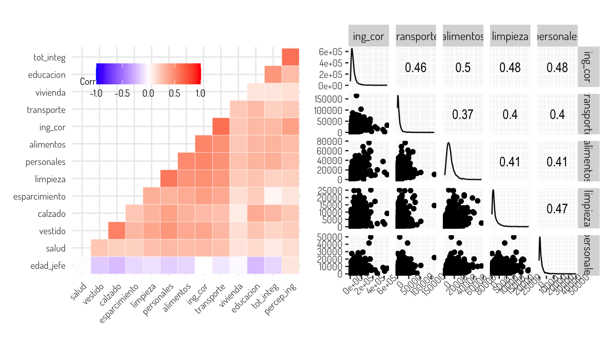
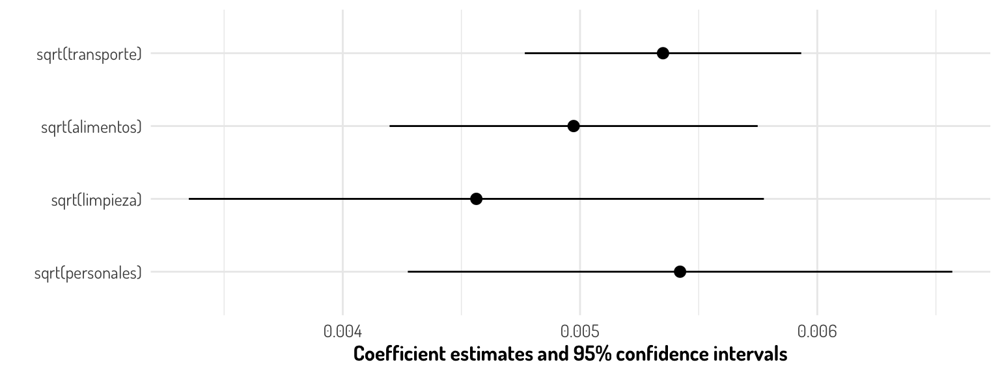
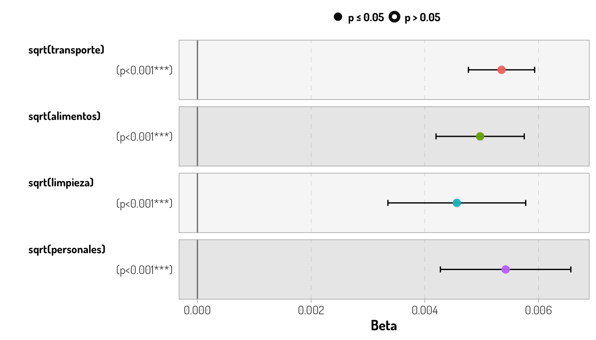
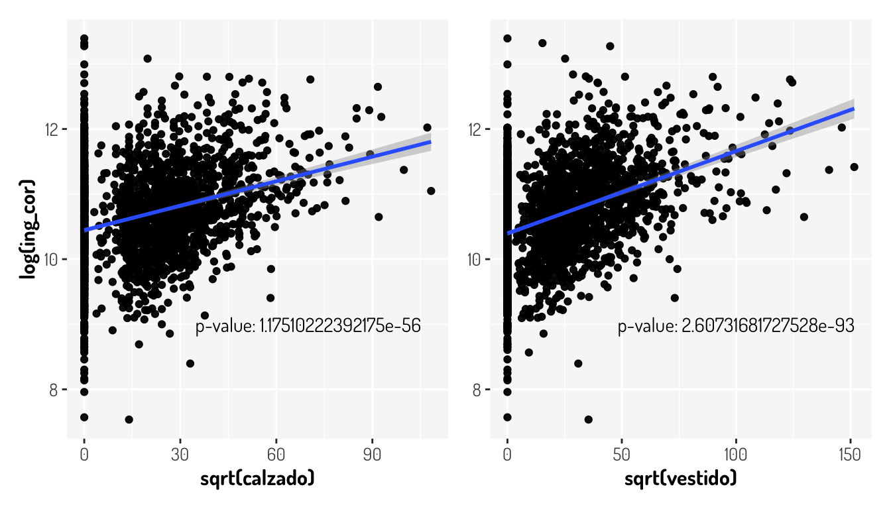
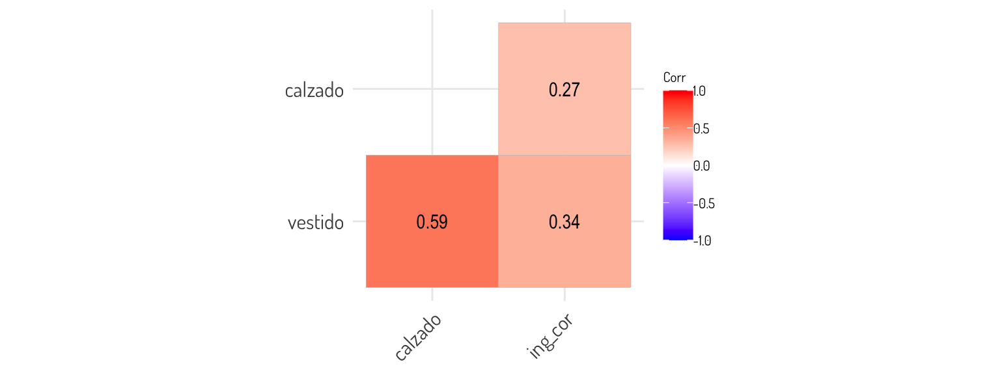
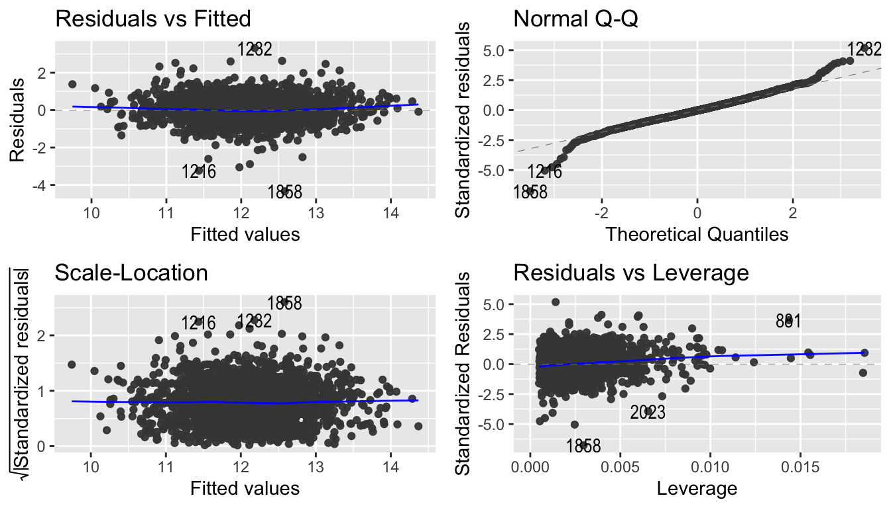
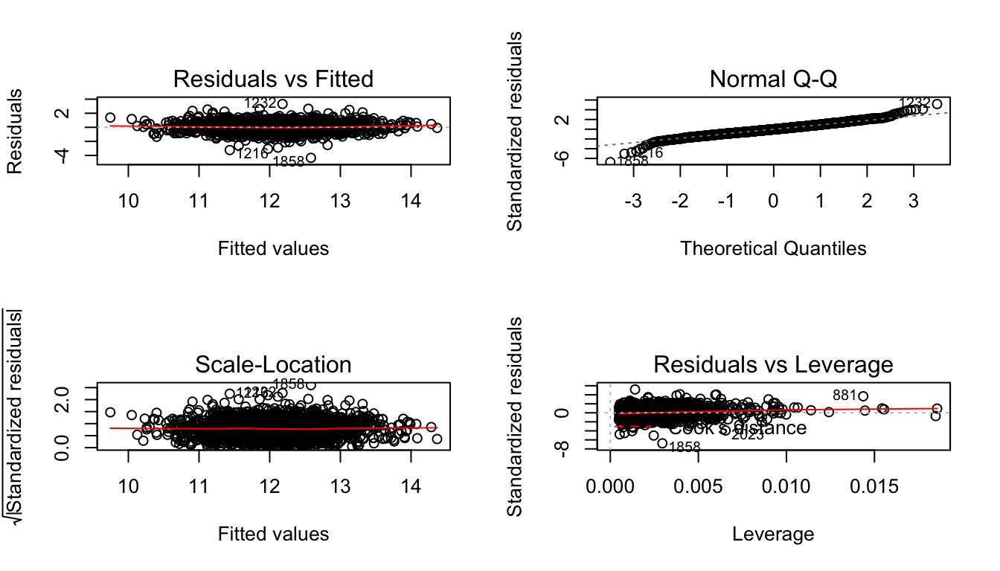

Capítulo 6 Regresión lineal múltiple
El mundo es complejo y aveces tratar de modelar el comportamiento de un evento sólo por una variable no es lo más conveniente; así que el camino natural para mejorar nuestro modelo de regresión simple es hacer múltiple agregando más variables. Así ya no estaríamos trabajando, geométricamente hablando, en una recta, si no en un hiperplano.Entonces, suponiendo \(p\) predictores, una regresión múltiple queda expresada matematicamente como sigue:
\[ f(X) = Y = \beta_0 +\beta_1X_1+\beta_2X_2+\dots + \beta_pX_p+\epsilon = \beta_0 + \sum_{i = 1}^pX_i\beta_i + \epsilon = X\beta + \epsilon \]
Donde \(\beta_i\) son los parámetros del modelo representando el efecto promedio en \(Y\) de un incremento de una unidad en \(X_i\), manteniendo todos los otros predictores fijos y \(\epsilon\sim N(0,\sigma^2)\).
De igual manera, la forma habitual de estimar los parámetros es mediante el uso de mínimos cuadrados para minimizar la suma de los residuales al cuadrado:
\[ \begin{split} RSS &= \sum_{i = 1}^n(y_i-f(x_i))^2 = \sum_{i = 1}^n(y_i-\hat y_i)^2 = \sum_{i = 1}^n(y_i-\hat\beta_0-\hat\beta_1x_{i1}-\hat\beta_2x_{i2}-\cdots-\hat\beta_px_{ip})^2\\ &= \sum_{i = 1}^n\left(y_i-\beta_0-\sum_{j = 1}^px_{ij}\beta_j\right)^2 \end{split} \]
Vamos a seguir tomando el ejemplo de los ingresos en el estado de Aguascalientes de acuerdo a la Encuesta Nacional de Ingresos y Gastos de los Hogares (ENIGH). 2018 Nueva serie. Vamos a ajustar un modelo con las variables que tengan la mejor correlación con el ingreso eliminando previamente algunos outliers que se consiguen en ciertas variables.
Para facilitarnos esto, veamos el siguiente gráfico de correlación con la correlación de spearman para ver relaciones monotonas y después diagramas de dispersión junto a la correlación de pearson que se consigue por pares.
(data_income %>% filter(ing_cor < 2000000 & transporte < 350000 & limpieza < 40000 & personales < 113246) %>%
cor(method = "spearman") %>%
ggcorrplot::ggcorrplot(hc.order = TRUE, outline.col = "white", type = "lower",
tl.cex = 8#, lab = T
)+
general_theme +
theme(legend.text = element_text(size = 8, face = "plain"),
legend.title = element_text(size = 8, face = "plain"),
legend.position = c(0.30, 0.85),
legend.direction = "horizontal",
legend.box = "horizontal",
panel.background = element_blank())) +
(data_income %>% filter(ing_cor < 2000000 & transporte < 350000 & limpieza < 40000 & personales < 113246) %>%
dplyr::select(ing_cor, transporte, alimentos, limpieza, personales) %>%
GGally::ggscatmat() +
general_theme +
theme(axis.text = element_text(size = 8),
axis.text.x = element_text(angle = 45)))
Por lo que proponemos distintas transformaciones; el resultado de esto lo podemos ver en la siguiente matriz de dispersión
data_income %>% filter(ing_cor < 2000000 & transporte < 350000 & limpieza < 40000 & personales < 113246) %>%
dplyr::select(ing_cor, transporte, alimentos, limpieza, personales) %>%
mutate(ing_cor = log(ing_cor),
transporte = sqrt(transporte),
alimentos = sqrt(alimentos),
limpieza = sqrt(limpieza),
personales = sqrt(personales)) %>%
GGally::ggscatmat() + general_theme
Entonces, ajustando un modelo de regresión con los siguientes datos obtenemos el siguiente modelo junto con la implementación de dicho modelo en R:
mutated_data_income <- data_income %>% filter(ing_cor < 2000000 & transporte < 350000 & limpieza < 40000 & personales < 113246)
#dplyr::select(ing_cor, transporte, alimentos, limpieza, personales)
#%>% dplyr::select(ing_cor_log, transporte_sqrt, alimentos_sqrt, limpieza_sqrt, personales_sqrt)
first_m_model <- mutated_data_income %>% lm(log(ing_cor)~sqrt(transporte) + sqrt(alimentos) + sqrt(limpieza) + sqrt(personales), data = .)
first_m_model %>% summary()
Call:
lm(formula = log(ing_cor) ~ sqrt(transporte) + sqrt(alimentos) +
sqrt(limpieza) + sqrt(personales), data = .)
Residuals:
Min 1Q Median 3Q Max
-3.5269 -0.3109 -0.0043 0.3218 2.6055
Coefficients:
Estimate Std. Error t value Pr(>|t|)
(Intercept) 9.3424687 0.0351277 265.957 < 2e-16 ***
sqrt(transporte) 0.0053498 0.0002970 18.010 < 2e-16 ***
sqrt(alimentos) 0.0049731 0.0003956 12.571 < 2e-16 ***
sqrt(limpieza) 0.0045630 0.0006180 7.383 2.15e-13 ***
sqrt(personales) 0.0054216 0.0005851 9.266 < 2e-16 ***
---
Signif. codes: 0 '***' 0.001 '**' 0.01 '*' 0.05 '.' 0.1 ' ' 1
Residual standard error: 0.5266 on 2297 degrees of freedom
Multiple R-squared: 0.479, Adjusted R-squared: 0.4781
F-statistic: 528.1 on 4 and 2297 DF, p-value: < 2.2e-16extract_eq(first_m_model)\[ \operatorname{log(ing\_cor)} = \alpha + \beta_{1}(\operatorname{sqrt(transporte)}) + \beta_{2}(\operatorname{sqrt(alimentos)}) + \beta_{3}(\operatorname{sqrt(limpieza)}) + \beta_{4}(\operatorname{sqrt(personales)}) + \epsilon \]
O mejor dicho
\[ \log(ing\_cor) = \alpha + \beta_{1}\sqrt{transporte} + \beta_{2}\sqrt{alimentos} + \beta_{3}\sqrt{limpieza} + \beta_{4}\sqrt{personales} + \epsilon \]
Como vemos, con todas las variables se rechaza la hipótesis \(H_0: \beta_i = 0\), además de que también se rechaza la hipótesis \(H_0: \beta_1 = \beta_2 = \beta_3 = \beta_4 = 0\) con la prueba ANOVA y tenemos un \(R^2\) ajustado del 0.4781, por lo que el modelo recupera un 47% de la variabilidad de los datos, lo cual no significa que sea un mal modelo. Veamos un poco más a detalle que significa todo esto, además de hacer ver posibles problemas que hagan que nuestro modelo no sea adecuado.
6.1 Pruebas de hipótesis y ANOVA e intervalos
Lo primero que nos otorga el summary del modelo anterior es lo siguiente:
broom::tidy(first_m_model)# A tibble: 5 × 5
term estimate std.error statistic p.value
<chr> <dbl> <dbl> <dbl> <dbl>
1 (Intercept) 9.34 0.0351 266. 0
2 sqrt(transporte) 0.00535 0.000297 18.0 6.18e-68
3 sqrt(alimentos) 0.00497 0.000396 12.6 4.24e-35
4 sqrt(limpieza) 0.00456 0.000618 7.38 2.15e-13
5 sqrt(personales) 0.00542 0.000585 9.27 4.30e-20Con esto obtenemos:
- Los coeficientes de nuestro modelo (columna
estimate) - El error estandar sobre para parámetro (columna
std.error) - El estadístico de la prueba sobre los coeficientes (columna
statistic) - El \(p-value\) sobre la prueba mencionada en el anterior punto (columna
p.value)
Hay que recordar que el error estandar nos ayuda a crear los intervalos de confianza sobre cada parámetro del modelo. Tomemos como ejemplo el termino \(\beta_1\) asociado a la raíz cuadrada del gasto en transporte. El intervalo de confianza en este caso sería, aproximadamente, el siguiente:
\[ \hat{\beta_i}\pm 2\cdot SE(\hat{\beta_i}) = \left[\hat{\beta_1}-2\cdot SE(\hat{\beta_1}), \hat{\beta_1}+2\cdot SE(\hat{\beta_1})\right] = [0.004755661, 0.005943853] \]
Lo que significa que, hay aproximadamente un 95% de probabilidad de que el intervalo \([0.004755661, 0.005943853]\) contiene el verdadero valor de \(\beta_1\). También podríamos haber utilizado el hecho de que suponemos en la construcción de intervalos de confianza que todos los coeficientes se distribuyen de manera normal (\(\hat{\beta_i} = N(\beta_i, \sigma^2C_{(i+1)(i+1)})\) donde \(C_{(i+1)(i+1)})\) es el i-ésimo coeficiente de la diagonal de la matriz \((X'X)^{-1}\)) y haber calculado los intervalos como:
\[ \hat{\beta_i}\pm 1.96\cdot SE(\hat{\beta_i}) = \left[\hat{\beta_1}-2\cdot SE(\hat{\beta_1}), \hat{\beta_1}+1.96\cdot SE(\hat{\beta_1})\right] = [0.004755661, 0.005943853] \]
Aunque para ser más precisos, los intervalos de confianza, de manera general, están determinados por la siguiente ecuación:
\[ \hat{\beta_i}\pm t_{n-k-1}^{\alpha/2} \sqrt{\hat{\sigma}^2C_{(i+1)(i+1)}} \]
Para nuestro caso podemos calcularlos de la siguiente manera:
sfm <- summary(first_m_model)
interval_confidence_firstM <- matrix(
c(sfm$coefficients[,1] - qt(0.975, df = sfm$df[2]) * sfm$coefficients[, 2],
sfm$coefficients[,1] + qt(0.975, df = sfm$df[2]) * sfm$coefficients[, 2]),
ncol = 2
)
row.names(interval_confidence_firstM) <- row.names(sfm$coefficients)
colnames(interval_confidence_firstM) <- c("lower", "upper")
interval_confidence_firstM lower upper
(Intercept) 9.273583316 9.411354045
sqrt(transporte) 0.004767247 0.005932267
sqrt(alimentos) 0.004197295 0.005748825
sqrt(limpieza) 0.003351097 0.005774906
sqrt(personales) 0.004274251 0.006569003Los cuales se pudieron haber obtenido con la función stats::confint.lm()
confint(first_m_model) 2.5 % 97.5 %
(Intercept) 9.273583316 9.411354045
sqrt(transporte) 0.004767247 0.005932267
sqrt(alimentos) 0.004197295 0.005748825
sqrt(limpieza) 0.003351097 0.005774906
sqrt(personales) 0.004274251 0.006569003Una manera elegante que podemos utilizar para visualizar la anterior información no las proporciona la función modelsummary::modelplot()
modelplot(first_m_model) + general_theme + theme(panel.background = element_blank())
Por la escala que tenemos en nuestro intercepto, tenemos poca apreciación del resto de coeficientes
modelplot(first_m_model, coef_omit = "Intercept") + general_theme + theme(panel.background = element_blank())
Retomando el ejemplo, podemos decir que en la ausencia de cualquiera de nuestras variables, el ingreso, en promedio, estará entre $10652.86 (=exp(9.273583316)) y 12226.41 pesos mexicanos. Y, por ejemplo, con un aumento de $1,000 pesos en el gasto de alimentos, el ingreso debe aumentar, en promedio para los ciudadanos de Aguascalientes, entre $1000.018 y $1000.033 pesos mexicanos.
Respecto a los valores obtenidos en la columna statistic, estos corresponden a un estadístico \(t\) para determinar si hay una relación entre la variable asociada a dicho parámetro y la variable a predecir. Para tales fines nuestro estadístico mide el número de desviaciones estandar que nuestro coeficientes lejanas desde el 0, es decir:
\[ t = \frac{\hat{\beta_i}-0}{SE(\hat{\beta_i})} \]
Y la prueba de hipótesis en la que se utiliza dicho estadístico queda determinada de la siguiente manera:
\[ \begin{array}{c} H_0: \mbox{No hay alguna relación entre }X \mbox{ y }Y \equiv \beta_i = 0\\ H_a: \mbox{Hay alguna relación entre }X \mbox{ y }Y \equiv \beta_i \neq 0 \end{array} \]
Entonces lo que buscamos es que \(\hat{\beta_i}\) este lo más alejado del 0, es decir que si \(SE(\hat{\beta_i})\) es pequeño, \(\hat{\beta_i}\) puede ser pequeño y si \(SE(hat{\beta_i})\) es grande, entonces \(\hat{\beta_i}\) debe ser lo suficientemente grande en valor absoluto. En la siguiente gráfica podemos ver que todas nuestras variables son relevantes para modelar el ingreso (gracias a que los \(p-values\) indican de la información no es compatible con la hipótesis nula), así como una comparación entre los valores de cada uno de los coeficientes.
GGally::ggcoef_model(first_m_model) + general_theme
Véase que al hacer el anterior objeto ggplot interactivo con la función plotly::ggplotly() podemos obtener toda la información de los coeficientes de una manera más compacta.
ggplotly(GGally::ggcoef_model(first_m_model) + general_theme)Por lo que, al considerar que la raíz cuadrada es una función monótona y creciente, al igual que el logaritmo en el rango que estamos considerando (\(\mathbb{R^{+}}\)), los cambios en los gastos personales, en promedio, son lo que más puede afectar en el ingreso si los demás gastos permanecen constantes; de hecho por cada $1,000 más en los gastos personales, se necesitará entre $1000.018 y $1000.043 pesos mexicanos que aumente el ingreso.
Lo último que se visualiza en un summary de un modelo lineal son algunas estadísticas sobre el rendimiento del modelo e información sobre la prueba ANOVA, por el momento sólo se analizará esto último.
glance(first_m_model) %>% dplyr::select(statistic, p.value, df)# A tibble: 1 × 3
statistic p.value df
<dbl> <dbl> <dbl>
1 528. 3e-323 4La prueba ANOVA (Análisis de Varianza) es un prueba que nos ayudará a determinar la significancia del modelo, es decir que se desea probar si la ecuación de regresión no explica una proporción considerable de la variabilidad en la variable respuesta, contra la hipótesis alternativa de que sí la explica, es decir:
\[ \begin{array}{c} H_0 : \beta_1 = \beta_2 = \cdots = \beta_p = 0\\ vs\\ H_1 : \beta_i \neq 0 \mbox{ p.a }i, i\in\{1,2,\dots, p\} \end{array} \]
El estadístico para esta prueba hace entender el nombre de la prueba y para obtenerlo necesitamos diferentes estadísticas. De acuerdo a la bibliografía se pueden encontrar diferentes nomenclaturas, aquí se colocan algunas ejemplos:
- \(TSS = SC_{total} = \sum(y_i-\bar{y_i})^2\): Total sum of squares o la suma de cuadrados total.
- \(SC_{reg} = SSM = SSR = \sum(\hat{y}_i-\bar{y})^2\): La suma de cuadrados de la regresión o del modelo.
- \(RSS = SC_{error} = SSE = \sum(y_i-\hat{y_i})^2\): La suma de cuadrados del error o de los residuales
La segunda estadística la podemos interpretar como la cantidad de varianza explicada por la regresión, por el modelo o por las variables; mientras la tercera se puede interpretar como la cantidad de varianza que no se explica por la regresión.
- \(CM_{reg} = SC_{reg}/p; MSM = MSR = SSM/p\): Cuadrado medio de la regresión o Mean Square of model/regression
- \(CM_{error} = SC_{error}/n-p-1; MSE = SSE/n-p-1\): Cuadrado medio del error
Y con esto ya podemos obtener nuestro estadístico \(F\):
- \(F = \frac{CM_{reg}}{CM_{error}}\)
- \(F = \frac{MSM}{MSE}\)
\[ F = \frac{MSR}{MSE} = \frac{CM_{reg}}{CM_{error}} = \frac{(TSS-RSS)/p}{RSS/(n-p-1)} \]
Este estadístico tiene una distribución \(F_{p, n-p-1}\) y rechazaremos la hipótesis nula cuando \(F>F^{(\alpha)}_{k, n-k-1}\). Si los supuestos del modelo de regresión lineal son validos, se puede ver que \(\mathbb{E}[RSS/(n-p-1)] = \sigma^2\), es decir la \(\sigma^2\) estimada para todo el modelo, y bajo la hipótesis nula \(\mathbb{E}[(TSS-RSS)/p] = \sigma^2\). Por lo que cuando NO hay relación entre la variable dependiente y los predictores, se esperaría que el estadístico \(F\) sea cercano a 1.
Si \(H_a\) es cierta \(\mathbb{E}[(TSS-RSS)/p] > \sigma^2\), por lo que tendríamos valores más grandes que 1 en el estadístico.
Entonces podemos interpretar este estadístico como la razón entre la variabilidad explicada por los regresores entre la variabilidad no explicada por el modelo, ponderando con los respectivos grados de libertad que contiene cada estadístico. Por lo que buscamos que nuestro modelo contenga la mayor cantidad de información proporcionada por los datos. Sólo para aclarar, \(TSS-RSS = SC_{total}-SC_{error} = SC_{reg}\) y esto es gracias a la siguiente igualdad
\[ SC_{total} = SC_{reg} + SC_{error} \]
La cual proviene de la ley total de la varianza donde los sumandos igual pueden ser interpretados como la cantidad de varianza explicada y no explicada:
\[ Var(Y) = \mathbb{E}[Var(Y|X)] + Var(\mathbb{E}[Y|X]) \]
Esto puede ser entendido de manera sencilla con la siguiente gráfica
Para resumir la información de dicha prueba tenemos la tabla ANOVA:
\[ \begin{array}{|c| c| c| c| c|} \hline &Grados\ de\ libertad & Suma\ de\ Cuadrados & Cuadrado\ Medio & Prueba\ F \\ \hline \hline Regresión & k & SSR = \hat{\beta}'X'\underline{Y}-n\overline{y}^2 & MSR = \frac{SC_{reg}}{k} & \frac{CM_{reg}}{CM_{error}} \\ \hline Error & n-k-1& SSE = \underline{Y}'(I-H)\underline{Y} & MSE = \frac{SC_{error}}{n-k-1} & -\\ \hline Total & n-1 & TSS = \underline{Y}'\underline{Y}-n\overline{y}^2 & - & - \\ \hline \end{array} \]
Y en R podemos utilizar la siguiente función con nuestro modelo previamente ajustado
anova(first_m_model)Analysis of Variance Table
Response: log(ing_cor)
Df Sum Sq Mean Sq F value Pr(>F)
sqrt(transporte) 1 416.14 416.14 1500.362 < 2.2e-16 ***
sqrt(alimentos) 1 108.51 108.51 391.233 < 2.2e-16 ***
sqrt(limpieza) 1 37.38 37.38 134.757 < 2.2e-16 ***
sqrt(personales) 1 23.81 23.81 85.862 < 2.2e-16 ***
Residuals 2297 637.09 0.28
---
Signif. codes: 0 '***' 0.001 '**' 0.01 '*' 0.05 '.' 0.1 ' ' 1m1 <- mutated_data_income %>% lm(ing_cor_log~transporte_sqrt + alimentos_sqrt +limpieza_sqrt + personales_sqrt, data = .)
m2 <- mutated_data_income %>% lm(ing_cor_log~ alimentos_sqrt +limpieza_sqrt + personales_sqrt, data = .)
anova(m2, m1)Aquí se dejan algunos enlaces que pueden ayudar a aclarar todos los conceptos
6.2 Interacción y selección de variables
Entre todos los factores que tenemos que considerar en nuestro modelo lineal múltiple, tenemos dos que pueden causar graves problemas: Aditividad y linearidad entre los predictores y la variable respuesta. El concepto (y supuesto) de Linearidad es claro para este momento (1 cambio en X implica un cambio constante en Y), por otro lado hemos utilizado la aditividad en nuestras interpretaciones de los coeficientes.
La aditividad significa que el efecto que tiene una variable predictora sobre el modelo es independiente de otra regresora sobre la variable respuesta lo cual podría no suceder. Véamos un ejemplo con la misma base de los ingresos en Aguascalientes. Para esto vamos a considerar un modelo más grande, tomando en cuenta las variables de calzado y vestido. Primero veamos la siguiente gráfica en la cual se plasman los datos ya transformados, considerando los filtros anteriores, agregando la significancia de la variable regresora sobre modelos lineales simples
m_calzado <- lm(log(ing_cor)~sqrt(calzado) , data = mutated_data_income) %>% summary()
m_vestido <- lm(log(ing_cor)~sqrt(vestido) , data = mutated_data_income) %>% summary()
(mutated_data_income %>%
ggplot(aes(x = sqrt(calzado), y = log(ing_cor))) +
geom_point() + geom_smooth(method = "lm") +
annotate("text", x = 70, y = 9, family="Dosis",
label = paste0("p-value: ", m_calzado$coefficients[2,4])) +
general_theme) +
(mutated_data_income %>%
ggplot(aes(x = sqrt(vestido), y = log(ing_cor))) +
geom_point() + geom_smooth(method = "lm") +
labs(y = NULL) +
annotate("text", x = 100, y = 9, family="Dosis",
label = paste0("p-value: ", m_vestido$coefficients[2,4])) +
general_theme)
Como vemos, ambas variables variables tiene un p-value muy pequeño para no considerarlas importantes en nuestro modelo, veamos si mejora nuestro modelo con dichas variables y de paso veamos el uso de la función stats::update()
update(first_m_model, . ~ .+ sqrt(calzado) + sqrt(vestido), data = mutated_data_income) %>% summary()
Call:
lm(formula = log(ing_cor) ~ sqrt(transporte) + sqrt(alimentos) +
sqrt(limpieza) + sqrt(personales) + sqrt(calzado) + sqrt(vestido),
data = mutated_data_income)
Residuals:
Min 1Q Median 3Q Max
-3.4248 -0.3146 -0.0112 0.3175 2.6405
Coefficients:
Estimate Std. Error t value Pr(>|t|)
(Intercept) 9.3719803 0.0352492 265.878 < 2e-16 ***
sqrt(transporte) 0.0052574 0.0002955 17.789 < 2e-16 ***
sqrt(alimentos) 0.0046875 0.0003982 11.773 < 2e-16 ***
sqrt(limpieza) 0.0040612 0.0006197 6.554 6.90e-11 ***
sqrt(personales) 0.0045262 0.0006040 7.493 9.52e-14 ***
sqrt(calzado) -0.0001498 0.0007305 -0.205 0.838
sqrt(vestido) 0.0032308 0.0006085 5.309 1.21e-07 ***
---
Signif. codes: 0 '***' 0.001 '**' 0.01 '*' 0.05 '.' 0.1 ' ' 1
Residual standard error: 0.523 on 2295 degrees of freedom
Multiple R-squared: 0.4867, Adjusted R-squared: 0.4854
F-statistic: 362.7 on 6 and 2295 DF, p-value: < 2.2e-16Comparado con el anterior modelo, nuestra \(R^2\) ajustada aumento y sigue siendo válida la prueba ANOVA, pero ¿Qué notamos ahora en nuestro modelo?
Al considerar la variable \(\sqrt{calzado}\), esta ya no es importante para el modelo de acuerdo a la prueba \(H_0: \beta_i = 0\). ¿Esto por qué sucede?
Al parecer el efecto que tenía la raíz cuadrado del calzado sobre el logaritmo de los ingresos ya no es relevante y esto es porque de alguna manera esta relación queda explicada por la otra variable que agregamos, es decir: \(\sqrt{vestido}\). Lo cual tiene sentido ya que si se hace un gasto en el vestido, es muy probable que sea haga un gasto en el calzado y si se hace un gasto en calzado, seguramente los encuestados consideraron esto en la variable vestido. De hecho, veamos que tan correlacionadas están estas variables
mutated_data_income %>% dplyr::select(vestido, calzado, ing_cor) %>% cor() %>% ggcorrplot(type = "lower", lab = T) + general_theme +
theme(legend.text = element_text(size = 8, face = "plain"),
legend.title = element_text(size = 8, face = "plain"),
legend.direction = "vertical",legend.position = "right",
panel.background = element_blank())
Entoces, al tener que los aumentos en el calzado aumentaran los del vestido y veceversa, esto viola el supuesto de aditividad en el modelo lineal. Para solucionar esto agregamos una interacción al modelo con estas variables, es decir que agregaremos el término \(\beta_iX_{calzado}X_{vestido}\) al modelo, entonces ahora nuestro modelo sería el siguiente:
\[ \begin{split} \log(ing\_cor) = & \beta_{0} + \beta_{1}\sqrt{transporte} + \beta_{2}\sqrt{alimentos} + \beta_{3}\sqrt{limpieza} + \beta_{4}\sqrt{personales} \\&+ \beta_5\sqrt{calzado} + \beta_6\sqrt{vestido} + \beta_7\sqrt{calzado}\times \sqrt{vestido} + \epsilon\\ =& \beta_{0} + \beta_{1}\sqrt{transporte} + \beta_{2}\sqrt{alimentos} + \beta_{3}\sqrt{limpieza} + \beta_{4}\sqrt{personales} +\\& \widetilde{\beta_5}\sqrt{calzado} + \beta_6\sqrt{vestido} + \epsilon \end{split} \]
En la última expresión suponemos que \(\widetilde{\beta_5} = \beta_5+\beta_7\sqrt{X_{vestido}}\) y así podemos seguir viendo nuestro modelo “sin interacciones,” sólo que ahora un cambio en el calzado tendrá un efecto en el vestido y veceversa
Para agregar una interacción entre variables, utilizamos var1:var2 en la formula. Veamos el summary que obtenemos de nuestro nuevo modelo
second_m_model <- update(first_m_model, . ~ .+ sqrt(calzado) + sqrt(vestido) + sqrt(calzado):sqrt(vestido),
data = mutated_data_income)
second_m_model %>% summary()
Call:
lm(formula = log(ing_cor) ~ sqrt(transporte) + sqrt(alimentos) +
sqrt(limpieza) + sqrt(personales) + sqrt(calzado) + sqrt(vestido) +
sqrt(calzado):sqrt(vestido), data = mutated_data_income)
Residuals:
Min 1Q Median 3Q Max
-3.3987 -0.3134 -0.0097 0.3153 2.6469
Coefficients:
Estimate Std. Error t value Pr(>|t|)
(Intercept) 9.351e+00 3.592e-02 260.359 < 2e-16 ***
sqrt(transporte) 5.253e-03 2.951e-04 17.802 < 2e-16 ***
sqrt(alimentos) 4.568e-03 3.997e-04 11.431 < 2e-16 ***
sqrt(limpieza) 4.136e-03 6.192e-04 6.680 3.00e-11 ***
sqrt(personales) 4.578e-03 6.033e-04 7.588 4.68e-14 ***
sqrt(calzado) 1.467e-03 9.206e-04 1.594 0.11108
sqrt(vestido) 4.718e-03 7.974e-04 5.916 3.79e-09 ***
sqrt(calzado):sqrt(vestido) -5.275e-05 1.832e-05 -2.879 0.00403 **
---
Signif. codes: 0 '***' 0.001 '**' 0.01 '*' 0.05 '.' 0.1 ' ' 1
Residual standard error: 0.5221 on 2294 degrees of freedom
Multiple R-squared: 0.4886, Adjusted R-squared: 0.487
F-statistic: 313.1 on 7 and 2294 DF, p-value: < 2.2e-16Es evidente, bajo una significancia del 5% que la ponderación de la interacción es estadísticamente diferente de cero, dándole un peso relevante a nuestro modelo. Con esto podemos decir que por cada $100 pesos de aumento en el calzado, tendremos un aumento de \((\beta_5+\beta_7\sqrt{X_{vestido}})\times 10 = (0.001467 + 0.004718\times X_{vestido})\times 10 = 0.01467 + 0.04718\times X_{vestido}\) unidades sobre el logaritmo de los ingresos.
Véase que seguimos viendo que \(\sqrt{calzado}\) sigue sin ser relevante.entonces ¿Por qué no consideramos un modelo sin esta variable?
Para evitar inconsistencias en los modelos, si se realiza una interacción, en el modelo se debe tener presente las variables de la interacción, a esto se le llama principio jerárquico, independientemente si el coeficiente de alguna de las variables es estadísticamente 0 o no. ¿Qué pasaría por ejemplo si omitimos el calzado en nuestro modelo? en tal caso, si hay un aumento en calzado pero no hay presencial del gasto en vestido \(\beta_7\sqrt{calzado\times vestido} = 0\) cuando debe ser así ya que realmente hubo un aumento en al menos una de las variables. Además de cumplir ahora el supuesto de aditividad, véase que nuestro modelo mejoro en comparación del anterior.
second_m_model %>%
glance() %>% gather("Estadística", "Nuevo modelo") %>%
inner_join(
first_m_model %>% glance() %>% gather("Estadística", "Anterior modelo"),
by = "Estadística"
)# A tibble: 12 × 3
Estadística `Nuevo modelo` `Anterior modelo`
<chr> <dbl> <dbl>
1 r.squared 0.489 4.79e- 1
2 adj.r.squared 0.487 4.78e- 1
3 sigma 0.522 5.27e- 1
4 statistic 313. 5.28e+ 2
5 p.value 0 3 e-323
6 df 7 4 e+ 0
7 logLik -1767. -1.79e+ 3
8 AIC 3551. 3.59e+ 3
9 BIC 3603. 3.62e+ 3
10 deviance 625. 6.37e+ 2
11 df.residual 2294 2.30e+ 3
12 nobs 2302 2.30e+ 3Con este nuevo modelo aumento el \(R^2\) ajustada, el \(p-value\) de la prueba ANOVA indica que nuestras variables son significativas y las estadísticas AIC y BIC disminuyeron.
La interacción con datos categóricos cambia un poco en el sentido de que puede ser más fácil identificar dichas interacciones.
Considerando el AIC, por ejemplo, podemos utilizar algunas técnicas para elegir el mejor modelo, de acuerdo a una estadística como esta, omitiendo diferentes variables al modelo o agregándolas. Estas técnicas son llamadas Forward Selection, Backward Selection y Mixed Selection en los cuales simplemente se comienza con un modelo base y se van agregando o eliminando variables de acuerdo a la significancia que se vaya obteniendo con los coeficientes o con otro criterio como el AIC.
Veamos como aplicarlo a nuestro modelo
best_second_model <- second_m_model %>% MASS::stepAIC(direction = "backward")Start: AIC=-2983.78
log(ing_cor) ~ sqrt(transporte) + sqrt(alimentos) + sqrt(limpieza) +
sqrt(personales) + sqrt(calzado) + sqrt(vestido) + sqrt(calzado):sqrt(vestido)
Df Sum of Sq RSS AIC
<none> 625.42 -2983.8
- sqrt(calzado):sqrt(vestido) 1 2.260 627.68 -2977.5
- sqrt(limpieza) 1 12.164 637.58 -2941.4
- sqrt(personales) 1 15.699 641.11 -2928.7
- sqrt(alimentos) 1 35.621 661.04 -2858.3
- sqrt(transporte) 1 86.397 711.81 -2687.9summary(best_second_model)
Call:
lm(formula = log(ing_cor) ~ sqrt(transporte) + sqrt(alimentos) +
sqrt(limpieza) + sqrt(personales) + sqrt(calzado) + sqrt(vestido) +
sqrt(calzado):sqrt(vestido), data = mutated_data_income)
Residuals:
Min 1Q Median 3Q Max
-3.3987 -0.3134 -0.0097 0.3153 2.6469
Coefficients:
Estimate Std. Error t value Pr(>|t|)
(Intercept) 9.351e+00 3.592e-02 260.359 < 2e-16 ***
sqrt(transporte) 5.253e-03 2.951e-04 17.802 < 2e-16 ***
sqrt(alimentos) 4.568e-03 3.997e-04 11.431 < 2e-16 ***
sqrt(limpieza) 4.136e-03 6.192e-04 6.680 3.00e-11 ***
sqrt(personales) 4.578e-03 6.033e-04 7.588 4.68e-14 ***
sqrt(calzado) 1.467e-03 9.206e-04 1.594 0.11108
sqrt(vestido) 4.718e-03 7.974e-04 5.916 3.79e-09 ***
sqrt(calzado):sqrt(vestido) -5.275e-05 1.832e-05 -2.879 0.00403 **
---
Signif. codes: 0 '***' 0.001 '**' 0.01 '*' 0.05 '.' 0.1 ' ' 1
Residual standard error: 0.5221 on 2294 degrees of freedom
Multiple R-squared: 0.4886, Adjusted R-squared: 0.487
F-statistic: 313.1 on 7 and 2294 DF, p-value: < 2.2e-16En este caso tenemos un bueno modelo ya que algorítmicamente si eliminamos alguna de las variables, perderíamos información con el subsequente modelo (esto mediante el AIC). Sólo para ejemplificar, veáse que pasaría con nuestros datos originales
model_zero <- lm(ing_cor~., data = mutated_data_income) %>% stepAIC(direction = "backward")Start: AIC=48539.95
ing_cor ~ edad_jefe + tot_integ + percep_ing + alimentos + vestido +
calzado + vivienda + limpieza + salud + transporte + personales +
educacion + esparcimiento
Df Sum of Sq RSS AIC
- tot_integ 1 1.8169e+09 3.2703e+12 48539
<none> 3.2685e+12 48540
- calzado 1 4.8737e+09 3.2734e+12 48541
- educacion 1 8.1884e+09 3.2767e+12 48544
- vestido 1 8.6011e+09 3.2771e+12 48544
- vivienda 1 1.0226e+10 3.2787e+12 48545
- edad_jefe 1 2.4454e+10 3.2930e+12 48555
- salud 1 3.5137e+10 3.3037e+12 48563
- percep_ing 1 5.0741e+10 3.3193e+12 48573
- personales 1 8.5543e+10 3.3541e+12 48597
- limpieza 1 8.8024e+10 3.3565e+12 48599
- esparcimiento 1 8.9726e+10 3.3582e+12 48600
- transporte 1 1.5210e+11 3.4206e+12 48643
- alimentos 1 1.7074e+11 3.4393e+12 48655
Step: AIC=48539.23
ing_cor ~ edad_jefe + percep_ing + alimentos + vestido + calzado +
vivienda + limpieza + salud + transporte + personales + educacion +
esparcimiento
Df Sum of Sq RSS AIC
<none> 3.2703e+12 48539
- calzado 1 5.6047e+09 3.2759e+12 48541
- educacion 1 7.5215e+09 3.2779e+12 48543
- vestido 1 9.2882e+09 3.2796e+12 48544
- vivienda 1 1.0559e+10 3.2809e+12 48545
- edad_jefe 1 2.8199e+10 3.2985e+12 48557
- salud 1 3.5594e+10 3.3059e+12 48562
- percep_ing 1 6.8639e+10 3.3390e+12 48585
- personales 1 8.4152e+10 3.3545e+12 48596
- limpieza 1 8.9924e+10 3.3603e+12 48600
- esparcimiento 1 9.5439e+10 3.3658e+12 48603
- transporte 1 1.5196e+11 3.4223e+12 48642
- alimentos 1 1.6893e+11 3.4393e+12 48653Véase que con todos los datos y sin ninguno tipo de limpieza el AIC determinado por el segundo modelo (se elimino la variable tot_integ) es mejor. Un punto importante que hay que remarcar es que este modelo no significa que sea el mejor que podamos obtener, de hecho nuestro último modelo (second_model) es hasta ahora el mejor.
Por razones que se explorarán posteriormente, vamos a eliminar la interacción y las variables calzada y vestido ya que el modelo es mejor sin estas variables (es mejor en los supuestos, lo cual nos importará más que obtener el mejor AIC o mejor \(R^2\)).
6.3 Supuestos y problemas potenciales
Antes de pasar con los supuestos del modelo lineal, véamos un poco más a detalle las transformaciones más comunes para obtener un comportamiento lineal entre nuestros predictores y la variable respuesta.
6.3.1 +Transformaciones
Hasta el momento se han mencionado algunas transformaciones que nos pueden ayudar a conseguir linealidad entre dos variables, por ejemplo cuando deseamos reducir la variabilidad de la variable a predecir o cambiar la escala de la variable predictora:
- \(log()\): Función monótona creciente definida para los positivos e indefinida para el 0.
- \(sqrt()\): Función monótona creciente definida para los positivos y el 0.
- \(1/x\): Función monótona creciente definida para los positivos e indefinida para el 0.
De acuerdo al comportamiento de los datos podemos aplicar cualquiera de estas variables siempre que este bien definida la función. ¿Qué podemos hacer cuando tenemos ceros? ¿Qué otras propuestas comunes existen?
Para el primer punto hay que pensar que los ceros pueden tener diferentes significados en nuestras variables, en una pregunta que se realizo en StackExchange: How should I transform non-negative data including zeros? se porponen diferentes puntos de vista validos que hay que pensar sobre los ceros en nuestros datos:
- Truncamiento: Puede ser que un modelaje para los datos sea un modelo de mezclas, un modelo de supervivencia, etc.
- Valores perdidos: Es natural que esto puedan ser valores perdidos y no un valor obtenido de la variable, por lo que se puede imputar información o eliminarla si se considera apropiado.
- Punto cero natural: Por ejemplo con niveles de ingreso (puede tratarse de una situación de desemepleo) y en tal caso una transformación sería lo indicado.
- Sensibilidad del instrumento de medición: Una solución podría ser agregar un pequeño valor a la información.
Sea cual sea el caso, podemos eliminarlos si no perdemos una gran cantidad de información o usar dichos datos como un segregador de la información. También podemos utilizar una transformación donde no existan problemas en este valor específico y una de las más populares es una de las parametrizaciones de la familia de transformaciones Box-Cox:
\[ g_{\lambda}(y) = \Bigg\{\begin{array}{rl}\frac{y^{\lambda}-1}{\lambda} & \lambda \neq 0\\ \log(y) & \lambda = 0\end{array} \]
Donde la función inversa es:
\[ y = \Bigg\{\begin{array}{cc}\exp\left(\frac{\log(1+\lambda g_{\lambda}(y))}{\lambda}\right) & \lambda \neq 0 \\ \exp(g_{\lambda}(y) & \lambda = 0\end{array} \]
Y para diferentes valores de \(\lambda\) tenemos diversas funciones asociadas:
- \(\lambda = 1\): No se requiere alguna transformación ya que se producen resultados idénticos a los originales y no se alteraría la variabilidad
- \(\lambda = 0.50\): Raíz cuadrada
- \(\lambda = 0.33\): Raíz cúbica
- \(\lambda = 0.25\): Raíz cuarta
- \(\lambda = 0\): Logaritmo natural
- \(\lambda = -0.50\): raíz cuadrada recíproca
- \(\lambda = -1\): Transformación inversa
La obtención de \(\lambda\) es mediante el método de máxima verosimilitud para obtener el valor más probable que haya dado lugar a la distribución observada de los residuos del modelo
\[ \log\mathbb{L} = -\frac{n}{2}\log(2\pi) - n\log \sigma - \frac{1}{2\sigma^2}\sum_{i = 1}^n\left[g_{\lambda}(y)-(\beta_0+\beta X)\right]^2 + (\lambda-1)\sum_{i = 1}^n \log Y_i \]
Este es obtenido de manera numérica y en general se elige un valor en el intervalo de confianza para dicho parámetro
\[ \left\{\lambda: \mathbb{L}(\lambda) > \mathbb{L}(\hat{\lambda}-\frac{1}{2}\chi_{1,\alpha}^2)\right\} \]
Tal información la podemos obtener de la función MASS::boxcox() la cual proporciona un gráfica donde podemos apreciar el intervalo de confianza y la verosimilitud para diferentes valores de \(\lambda\). Como argumento le pasamos a la función el modelo de regresión que hemos creado.
Es común que esta transformación es aplicada a la variable respuesta, ya que al hacer esto generalmente se reduce la no normalidad de los residuales, al igual que la no linearidad (relacionado con la independencia de estos) y se mejoran problemas de homocedasticidad.
Con nuestros datos, se decidió eliminar las observaciones donde se tengan ceros en las variables predictoras (ya que estos representan menos del 10% de información y, se puede comprobar, dejando dichas observaciones se obtienen diversos problemas con las pruebas de hipótesis y el análisis de valores influyentes). También se cambiaron algunas transformaciones ya que, al no tener valores que afecten el logaritmo se mejoró la relación lineal de algunos predictores con la variable respuesta
filter_data <- data_income_sexo %>%
filter(ing_cor < 2000000 & transporte < 350000 & limpieza < 40000 & personales < 113246) %>%
filter(transporte != 0 & limpieza != 0 & personales != 0 & alimentos != 0) %>%
dplyr::select(ing_cor, transporte, alimentos, limpieza, personales)
third_model <- lm(ing_cor~log(transporte) + sqrt(alimentos) + log(limpieza) +
log(personales), data = filter_data)
boxCox_third_model <- boxcox(third_model,
plotit = TRUE, #Deseamos ver la gráfica
lambda = seq(-0.2, 0.2, by = 0.1) # Con esto modificamos el rango
)
Entonces no estábamos mal al proponer al logaritmo en el ingreso como una transformación que ayudaría a nuestro modelo lineal. Podemos obtener el valor exacto en el que se maximiza la verosimilitud
(lambdaBCox_tM <- boxCox_third_model$x[which.max(boxCox_third_model$y)])[1] 0.02222222Es decir, esto nos sugiere hacer un modelo con la siguiente variable repuesta
\[ \frac{y^{\lambda}-1}{\lambda} = \frac{y^{0.022}-1}{0.022} \]
Y con esto tendríamos el siguiente summary del correspondiente modelo:
third_model_BX <- lm(((ing_cor^lambdaBCox_tM-1)/lambdaBCox_tM) ~
log(transporte) + sqrt(alimentos) + log(limpieza) + log(personales),
data = filter_data)
third_model_BX %>% summary()
Call:
lm(formula = ((ing_cor^lambdaBCox_tM - 1)/lambdaBCox_tM) ~ log(transporte) +
sqrt(alimentos) + log(limpieza) + log(personales), data = filter_data)
Residuals:
Min 1Q Median 3Q Max
-4.3384 -0.4054 -0.0169 0.3843 3.3192
Coefficients:
Estimate Std. Error t value Pr(>|t|)
(Intercept) 6.9124443 0.1361592 50.767 <2e-16 ***
log(transporte) 0.2564575 0.0142296 18.023 <2e-16 ***
sqrt(alimentos) 0.0060496 0.0005121 11.813 <2e-16 ***
log(limpieza) 0.1503380 0.0180963 8.308 <2e-16 ***
log(personales) 0.1762014 0.0186708 9.437 <2e-16 ***
---
Signif. codes: 0 '***' 0.001 '**' 0.01 '*' 0.05 '.' 0.1 ' ' 1
Residual standard error: 0.6418 on 2139 degrees of freedom
Multiple R-squared: 0.4886, Adjusted R-squared: 0.4876
F-statistic: 510.9 on 4 and 2139 DF, p-value: < 2.2e-16¿Cómo se compara con nuestro anterior mejor modelo?
second_m_model %>%
glance() %>% gather("Estadística", "Viejo modelo") %>%
inner_join(
third_model_BX %>% glance() %>% gather("Estadística", "Nuevo modelo") %>%
dplyr::mutate_if(is.numeric, round, digits = 8),
by = "Estadística"
)# A tibble: 12 × 3
Estadística `Viejo modelo` `Nuevo modelo`
<chr> <dbl> <dbl>
1 r.squared 0.489 0.489
2 adj.r.squared 0.487 0.488
3 sigma 0.522 0.642
4 statistic 313. 511.
5 p.value 0 0
6 df 7 4
7 logLik -1767. -2089.
8 AIC 3551. 4190.
9 BIC 3603. 4224.
10 deviance 625. 881.
11 df.residual 2294 2139
12 nobs 2302 2144 Si bien parece ser mejor el nuevo modelo por centésimas en el \(R^2\) ajustado, otras estadísticas como el logLik, IAC y BIC indican que nuestro modelo no mejoro y pero es relevante ver si mejora este modelo omitiendo outliers y valores influyentes.
Otras propuestas son las transformación Box-Cox que permiten un desplazamiento en los datos y la transformación inversa del seno hiperbólico.
\[ g_{\lambda_1, \lambda_2}(y) = \Bigg\{\begin{array}{rl}\frac{(y+\lambda_2)^{\lambda_1}-1}{\lambda_1} & \lambda_1 \neq 0\\ \log(y + \lambda_2) & \lambda_1 = 0\end{array} \]
\[ \begin{array}{lr} f(y, \theta) = \sinh^{-1}(\theta y)/\theta = \log\left(\theta y + (\theta^2y^2+1)^{1/2}\right)/\theta & ;\theta>0 \end{array} \]
Aquí se dejan otros enlaces interesantes sobre la transformación Box-Cox
- Transforming data with zeros
- 14.1.2 Box-Cox Transformations
- Box-cox transformation
- recipes: Box-Cox Transformation for Non-Negative Data
- A new approach to the Box–Cox transformation
- Statistics How To: Box Cox Transformation
- OnlineStatBook Project Home: Box-Cox Transformations
- Box-Cox Transformations: An Overview
6.3.2 Interpretaciones
Es importante hacer ver que al modificar alguna de las variables con alguna transformación, ya sea la variable respuesta o alguna de las variables independientes, también se modifica la interpretación de todo. Generalmente podemos aplicar transformaciones inversas para dar una interpretación de nuestras variables originales, hay que tener en cuenta ciertos detalles con algunas funciones.
- Logaritmo
- Raíz cuadrada
6.3.3 Validación
Para que nuestros resultados tengan validez, necesitamos cumplir una serie de supuestos y es recomendable verificar algunos problemas potenciales. De lo principal que debemos verificar en cada modelo es lo siguiente:
Linearidad: La respuesta puede ser escrita como una combinación lineal de los predictores: \(\mathbb{E}[Y|X_1 = x_1, \dots, X_k = x_k] = \beta_0+\beta_1x_1+\cdots+\beta_kx_k\).
Homocedasticidad: La varianza de los errores es la misma en cualquier conjunto de los valores predichos: \(\mathbb{V}ar(\epsilon_i) = \sigma^2\), con \(\sigma^2\) constante para \(i = 1, \dots, n\).
Normalidad: La distribución de los errores deben seguir una distribución normal: \(\epsilon_i \sim \mathbb{N}(0,\sigma^2)\) para \(i = 1, \dots, n\).
Independencia: Los errores son independientes: \(\epsilon_1, \dots, \epsilon_n\) son independientes o \(\mathbb{E}[\epsilon_i\epsilon_j] = 0, i\neq j\), es decir, que los errores no estan correlacionados ya que asumimos que son normales.
Aditividad: El efecto que tiene una variable predictora sobre el modelo es independiente de otra regresora sobre la variable respuesta. En caso de tener problemas con esto, podríamos tener problemas de multicolinealidad.
Este último es considerado como supuesto del modelo en los libros James et al. (2013) y Friedman et al. (2001) pero es común que sólo los primeros 4 sean considerados los supuestos del modelo. Si bien es cierto que es ideal que todos nuestros supuestos se cumplan, podemos dar cierta tolerancia a ellos por su Robustez. El libro Gelman and Hill (2006) enlista los anteriores supuestos en orden de importancia (de manera descendente) y el libro Ramsey and Schafer (2012) se dan algunos puntos importantes sobre esto.
Validez: La información debe ser adecuada para responder tu pregunta objetivo
Aditividad y linearidad: El supuesto matemático más importante del modelo de regresión es que su componente determinista es una función lineal de los predictores separados. Esto puede ser corregido con diferentes transformaciones.
Este supuesto puede ser violado cuando la recta de ajuste entre los datos no es recta (una curva por ejemplo) o cuando la cantidad y fuerza de los valores atípicos no permiten que el modelo sea adecuado. Ambas violaciones pueden hacer que las estimaciones de mínimos cuadrados den respuestas engañosas a las preguntas de interés. Las medias y las predicciones estimadas pueden estar sesgadas (subestiman o sobrestiman sistemáticamente la cantidad prevista) y las pruebas y los intervalos de confianza pueden reflejar de forma inexacta la incertidumbre
Independencia de los errores: La falta de independencia no provoca sesgos en las estimaciones de mínimos cuadrados de los coeficientes, pero los errores estándar se ven seriamente afectados. Este problema puede ser dado, por ejemplo, cuando los individuos en un estudio pertenecen a un mismo grupo o comparten características similares que no se consideraron como que tenga la misma dieta, sean de la misma familia o hayan sido expuestos a las mismas condiciones ambientales.
Homocedasticidad: Si la varianza de los errores de regresión es desigual, la estimación se realiza de manera más eficiente utilizando mínimos cuadrados ponderados, donde cada punto se pondera inversamente proporcional a su varianza. En la mayoría de los casos, sin embargo, este problema es menor. La varianza desigual no afecta el aspecto más importante de un modelo de regresión, que es la forma del predictor \(X\beta\).
Las consecuencias de violar este supuesto son las mismas que las del análisis de varianza unidireccional. Aunque las estimaciones de mínimos cuadrados siguen siendo insesgadas incluso si la varianza no es constante, los errores estándar describen de manera inexacta la incertidumbre en las estimaciones. Las pruebas y los intervalos de confianza pueden ser engañosos.
- Normalidad: El supuesto de regresión que generalmente es menos importante es que los errores se distribuyen normalmente. De hecho, para estimar la línea de regresión (en comparación con la predicción de puntos de datos individuales), el supuesto de normalidad apenas tiene importancia.
Las estimaciones de los coeficientes y sus errores estándar son robustas a distribuciones no normales. Aunque las pruebas y los intervalos de confianza se originan en distribuciones normales, las consecuencias de violar este supuesto suelen ser menores. La única situación de gran preocupación es cuando las distribuciones tienen colas largas (existen valores atípicos) y los tamaños de muestra son de moderados a pequeños. Si se utilizan intervalos de predicción, por otro lado, las desviaciones de la normalidad se vuelven importantes. Esto se debe a que los intervalos de predicción se basan directamente en la normalidad de las distribuciones de la población, mientras que las pruebas y los intervalos de confianza se basan en la normalidad de las distribuciones muestrales de las estimaciones (que pueden ser aproximadamente normales incluso cuando las distribuciones de la población no lo son).
Por lo que en este punto, si tenemos una buena cantidad de datos, podemos ser flexibles con este último supuesto.
La manera más sencilla de ver la mayoría de estos supuestos es mediante una gráfica de residuales vs los valores ajustados donde, para la linealidad deseamos ver que los residuales tengan un comportamiento aleatorio con una varianza constante y media cero, lo cual implicitamente también ayuda con la homocedasticidad y normalidad. Esta gráfica y otras no las proporciona el comando plot() para un modelo lineal
par(mfrow = c(2, 2))
third_model_BX %>% plot()
O bien con la función ggfortify::autoplot()
third_model_BX %>% autoplot()
Para más detalles de estas gráficas véase la sección de Análisis de valores influyentes. Finalmente aplicamos diversas pruebas para probar cada uno de los supuestos:
- Normalidad:
- Todas las pruebas que se vieron anteriormente.
third_model_BX %>% residuals() %>% shapiro.test()
Shapiro-Wilk normality test
data: .
W = 0.98185, p-value = 6.856e-16- Homocedasticidad:
- Prueba de Breusch-Pagan:
lmtest::bptest() - Prueba de White:
lmtest::bptest()
- Prueba de Breusch-Pagan:
third_model_BX %>% bptest()
studentized Breusch-Pagan test
data: .
BP = 6.2836, df = 4, p-value = 0.1789- Autocorrelación (independencia):
- Durbin Watson:
lmtest::dwtest() - Breusch-Godfrey Test:
lmtest::bgtest()
- Durbin Watson:
dwtest(third_model_BX)
Durbin-Watson test
data: third_model_BX
DW = 1.8388, p-value = 9.232e-05
alternative hypothesis: true autocorrelation is greater than 0bgtest(third_model_BX)
Breusch-Godfrey test for serial correlation of order up to 1
data: third_model_BX
LM test = 13.716, df = 1, p-value = 0.0002126Colinearidad/Multicolinealidad
Una manera sencilla para detecetar la colinearidad es ver un correlograma y tomar aquellas variables que tengan fuerte relación entre ellas. Así sabiendo que una variable explica a otra, podríamos omitirla del modelo y determinar si esto mejora nuestro rendimiento, o bien crear una nueva variable. Otra solución en caso de colinearidad podría ser una interacción como ya se vio previamente.
El problema con lo anterior es que no todos los problemas de colinearidad pueden ser detectados mediante un correlograma, ya que puede existe una relación entre tres o más variables sin que sea visible tomándolo por pares. A lo anterior es lo que llamaremos multicolinearidad
Lo recomendable, y más sencillo, es visualizar el factor de inflación de varianza: VIF el cual es la razón de la varianza de \(\beta_j\) cuando
\[ VIF\left(\hat{\beta}_i\right) = \frac{1}{1-R^2_{X_j|X_{-j}}} \]
Donde \(R^2_{X_j|X_{-j}}\) es la \(R^2\) de la regresión de \(X_j\) a todos los demás predictores; es decir, la proporción de variabilidad en \(X_j\) que es explicada por su relación lineal a las otras variables del modelo. Cuando \(X_j\) puede ser bien explicada por la adicción de las demas variables; es decir cuando \(R^2_{X_j|X_{-j}}\) es cercano a 1, entonces el valor \(VIF\) será grande e indicaría problas de colinearidad.
Buscamos valores pequeños y lo más pequeño que se puede obtener para cada variable es un \(VIF = 1\) lo cual indica una completa ausencia de colinearidad. Por regla de dedo, un \(VIF\) mayor a 5 o 10 indica problemas de colinearidad. En R podemos obtener el \(VIF\) para cada variable con la función faraway::vif()
third_model_BX %>% vif()log(transporte) sqrt(alimentos) log(limpieza) log(personales)
1.409547 1.469732 1.560714 1.649865 No tenemos problemas de colinearidad.
¿Qué sucedió con nuestro segundo modelo?
second_m_model %>% residuals() %>% shapiro.test()
Shapiro-Wilk normality test
data: .
W = 0.98339, p-value = 9.574e-16second_m_model %>% bptest()
studentized Breusch-Pagan test
data: .
BP = 51.355, df = 7, p-value = 7.823e-09second_m_model %>% bgtest()
Breusch-Godfrey test for serial correlation of order up to 1
data: .
LM test = 14.285, df = 1, p-value = 0.0001571second_m_model %>% vif() sqrt(transporte) sqrt(alimentos)
1.475002 1.546820
sqrt(limpieza) sqrt(personales)
1.631803 1.816380
sqrt(calzado) sqrt(vestido)
2.500522 2.971420
sqrt(calzado):sqrt(vestido)
4.387703 Invalidamos el supuesto de homocedasticidad que ya habíamos conseguido con nuestro tercer modelo, por lo que preferiremos el tercer modelo desde ahora.
- Introduction to Econometrics with R: OLS Assumptions in Multiple Regression
- Lab notes for Statistics for Social Sciences II: Multivariate Techniques: 3.3 Assumptions of the model
- Modelos de Regresión con R: 9. Diagnósticos parte I
- Applied Statistics with R: Chapter 13 Model Diagnostics
- Lab notes for Statistics for Social Sciences II: Multivariate Techniques: 3.8 Model diagnostics and multicollinearity
- Regression Model Diagnostics
6.4 Predicción
Uno de los puntos más objetivos principales de crear un modelo de regresión es predecir un valor futuro de acuerdo a diferentes valores de nuestras variables predictoras. Esto es sencillo teniendo ya el modelo. Vamos a suponer que nuestro último modelo es adecuado (ya que aún no hemos tratado el tema de validación de supuestos, los cuales en predicción son vitales para su credibilidad)
En R podemos utilizar el comando predict() para obtener fácilmente las predicciones de nueva información sobre un modelo. En esta caso vamos a realizar un ejemplo con regresión simple ya que es análogo para el modelo de regresión múltiple.
new_data <- data.frame(vestido = 100)
simple_model <- lm(log(ing_cor)~sqrt(vestido), data = mutated_data_income %>% filter(vestido<7500 & vestido>0))
simple_model %>% predict(new_data) 1
10.42712 Véase que R se encarga de las transformaciones en las variables predictoras (en este caso el modelo queda expresado como \(y = 10.26570 + 0.01614\times \sqrt{X_{vestido}}\))
- \(10.26570 + 0.01614\times100 = 11.8797\)
- \(10.26570 + 0.01614\times\sqrt{100} = 10.42712\)
Entonces, en este caso podemos decir que con un gasto de $100 mexicanos en vestido (con esta base de datos), un ciudadano de Aguascalientes, en promedio tiene que ganar \(e^{10.26570}\times e^{(0.01614\times\sqrt(100)} = exp(10.42712) = \$33762.97\) pesos mexicanos.
La misma función predict() nos permite obtener los intervalos de confianza para la respuesta media y los intervalos de predicción con el argumento interval = c("confidence", "prediction")
¿Cuál es la diferencia entre estos?
Como sabemos, nuestro modelo sólo es una representación de la realidad ya que mediante algún método obtenemos estimaciones sobre los parámetro (los \(\beta_i\)s); es decir, sólo estamos obteniendo una estimación del verdadero plano poblacional de regresión
\[ f(X) = \beta_0 + \beta_1X_1 + \cdots + \beta_{p}X_p \]
con nuestro plano obtenido por el método de mínimos cuadrados
\[ \hat{Y} = \hat{\beta}_0 + \hat{\beta_1}X_1 + \cdots + \hat{\beta}_{p}X_p \]
en el cual controlamos un error que se puede reducir. Sobre dicha respuesta promedio es donde tenemos nuestros intervalos de confianza. Por ejemplo, si nosotros recolectamos distintas bases de datos con las variables que tenemos en nuestro último modelo del ingreso en Aguascalientes, digamos 100, y obtenemos el intervalo de confianza sobre el promedio del gasto en cada una de esas bases (con las variables explicativas fijas), 95% de dichos intervalos contendrán el verdadero valor promedio del gasto (la respuesta media en este caso). Recordemos que este valor promedio es lo que tenemos con la evaluación de un vector X conocido.
En el caso del intervalo de predicción, estamos haciendo inferencia sobre el error que no controlamos en el modelo (\(\epsilon\)), por lo que es común que el intervalo de predicción sea más amplio que los intervalos de confianza al incorporar esta incertidumbre. Si bien, al igual que en el intervalo de confianza estaríamos dando un intervalo para un valor de la respuesta, en este caso es de manera específica y no sobre una aproximación hacia la población.
Entonces, sí se desea dar un intervalo para un punto en particular, utilizaremos los intervalos de predicción y si deseamos hablar de los valores medios de predicción, usaríamos un intervalo de confianza.
new_data <- data.frame(vestido = 100, 200, 150)
simple_model %>% predict(new_data, interval = "confidence") fit lwr upr
1 10.42712 10.37179 10.48246simple_model %>% predict(new_data, interval = "prediction") fit lwr upr
1 10.42712 9.206192 11.64806En este caso de una regresión lineal simple podemos visualizar mejor dichos intervalos
pred_int <- predict(simple_model, interval = "prediction")
ggplotly(mutated_data_income %>% filter(vestido<7500 & vestido>0) %>% bind_cols(pred_int %>% as_tibble()) %>%
ggplot(aes(x = sqrt(vestido), y = log(ing_cor))) +
geom_point() +
geom_smooth(method = "lm") + #Intervalos de confianza
geom_line(aes(y = lwr), color = "red", linetype = "dashed") + #intervalos de predicción
geom_line(aes(y = upr), color = "red", linetype = "dashed") +
general_theme)References
Friedman, Jerome, Trevor Hastie, Robert Tibshirani, and others. 2001. The Elements of Statistical Learning. Vol. 1. 10. Springer series in statistics New York.
Gelman, Andrew, and Jennifer Hill. 2006. Data Analysis Using Regression and Multilevel/Hierarchical Models. Cambridge university press.
James, Gareth, Daniela Witten, Trevor Hastie, and Robert Tibshirani. 2013. An Introduction to Statistical Learning. Vol. 112. Springer.
Ramsey, Fred, and Daniel Schafer. 2012. The Statistical Sleuth: A Course in Methods of Data Analysis. Cengage Learning.